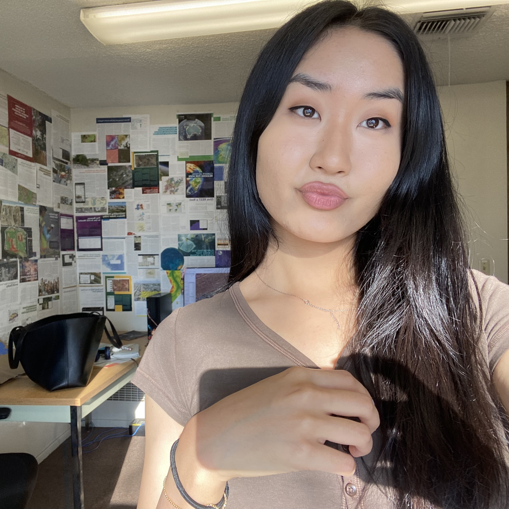

Hi. I'm Anujin Byambajav.
I'm an undergraduate student studying environmental studies at Cal State San Bernardino. Welcome to my brief introduction site about myself and my projects.
I'm an undergraduate student studying environmental studies at Cal State San Bernardino. Welcome to my brief introduction site about myself and my projects.
I'm an international student from Ulaanbaatar, Mongolia. I came to the United States to get my Bachelor's degree when I was 16 years old. I currently live in Redlands, California.

I found mapping extremely fascinating because I believe that creating maps is another form of art. Looking at a map makes one think and see spatially. They make sense of things. It reveals patterns and relationships that one may not see from reading. During my senior year I went deeper into mapping world of ArcGIS. I've developed personal projects using ArcGIS Javascript SDK and related API's such as Calcite to build web apps.
Here are some of the applications that I use: